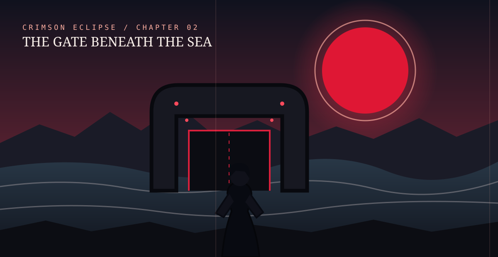

PANEL 01 — THE VANISHING TIDE
The sea withdrew without a sound, leaving ships tilted in the mud like forgotten toys. Beneath the final line of foam, black stone emerged.
AN INTERACTIVE GRAPHIC NOVEL
When the moon began to disappear, the world forgot how to dream.
BEGIN THE STORY ↓Somewhere beyond the edge of the map, one memory refused to fade.
At midnight, the moon turned red. At 12:01, every clock stopped.
“My grandmother said the moon was not a place. It was a promise.”
Mara was the only person who still remembered the old stories. Everyone else remembered a sky with nothing in it.
And tonight, for the first time, Mara wondered if remembering was a gift—or a curse.
At dawn, the town square filled with people pointing upward. They argued about the empty sky as if it had always been empty. A child asked what a moon was. Nobody laughed. Nobody knew.
Mara opened her grandmother’s notebook. Every page had turned blank—except the last, where a fresh line of ink slowly appeared.
It had no handle. No hinges. Only a small inscription carved into the stone: REMEMBER WHO YOU WERE.
THE LAST WITNESS
She carried a blue coat, a broken compass, and the one memory the darkness could not erase.
The compass did not point north anymore. It pointed toward the sound of waves—and every time Mara followed it, the ocean seemed to pull farther away from the shore.

The sea withdrew without a sound, leaving ships tilted in the mud like forgotten toys. Beneath the final line of foam, black stone emerged.
Mara climbed down between stranded boats. The compass needle trembled so hard its glass began to ring. At the edge of the exposed seabed stood a gate taller than a cathedral, its surface covered in names.
“These are not names of the dead,” whispered a voice behind her. “They are the names of the people the world has forgotten.”
Mara turned. An old lighthouse keeper stood ankle-deep in the receding water, though his coat was perfectly dry. His face seemed familiar in the way of a dream you lose the moment you wake.
She found her grandmother’s name carved near the gate’s center. Beneath it, a second line slowly appeared: MARA VALE — THE LAST WITNESS.
The gate opened a finger’s width. From the darkness beyond came the sound of a thousand clocks starting at once—and a voice that sounded exactly like Mara’s own.
“If you come through, you must give the moon a memory in return.”
Mara looked down at the compass. Where its needle had been, a tiny red light now beat like a heart. Then the tide began to return.
END OF CHAPTER ONE
Some doors only open when you remember.
CHAPTER TWO IS COMING — THE GATE HAS HEARD YOU.